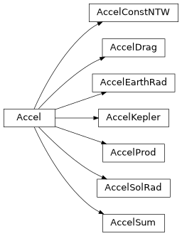

ssapy.accel
Classes for modeling accelerations.
Classes
|
Base class for accelerations. |
|
Constant acceleration in NTW coordinates. |
|
Acceleration due to atmospheric drag. |
|
Acceleration due to Earth radiation pressure. |
|
Keplerian acceleration. I.e., force is proportional to 1/|r|^2. |
|
Acceleration defined as the product of an acceleration with a constant factor. |
|
Acceleration due to solar radiation pressure. |
|
Acceleration defined as the sum of other accelerations. |
|
An ellipsoid representation for coordinate transformations. |
Class Inheritance Diagram
